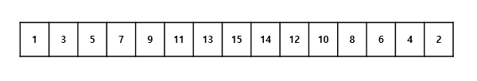
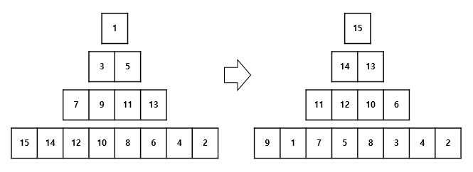

Heap Queue는 내부적으로 Heap Tree 구조를 가지는 자료 구조이다. Heap Tree는 Heap 정렬에서 찾아 볼 수 있는 구조로서, 정렬을 하는 부분에 있어도 용이하지만, 요소들 중에서 최솟값 또는 최댓값을 빨리 뽑아 내기 위한 용도로 쓸모가 있다.
일반적으로 n개의 요소를 가지는 목록에서 최솟값 또는 최댓값을 찾는 것은 시간 복잡도로 보자면 O(n)이다. 루프를 사용하여 목록의 각 요소를 찾아가며 최소, 최대를 찾기 때문에 기본적으로 n번 루프를 돌아야 한다. 그러나 Heap Tree를 사용하면 시간 복잡도를 O(logn) 수준으로 바꿀 수 있기 때문에 성능에 큰 잇점이 있다.
여기서 주의할 점은, 전혀 정렬이 안된 목록이 주어졌을 때는 Heap Tree 구조를 만들기 위해서 최초 O(nlogn)의 시간 복잡도를 가지게 된다는 점이다. 이 작업은 당연히 O(n)보다는 느리다. 그러나 이후 요소들을 동적으로 넣고 빼는 작업에서는 O(logn)의 성능을 보여주기 때문에 Heap Tree를 사용하는 것은 매우 유용하다.
Heap Tree 구조를 만드는 자세한 과정은 생략하고 다음과 같은 이미지로 대체하겠다.


구현
소스 코드는 다음과 같다.
class Heapq:
"""
Heap Tree 구조를 사용하는 Queue
Args:
heap (list): (option) 데이터, 없는 경우 내부적으로 빈 list를 생성한다.
"""
def __init__(self, heap = []):
self.heap = heap
# 최초 힙 구조를 만들기 위해서 모든 요소마다 상향식으로 힙 구조를 생성한다.
for c in range(0, self.count()): self.__make_heap_up(c)
#end def
def __str__(self): return self.heap.__str__()
# 스왑
def __swap(self, h, i, j): h[i], h[j] = h[j], h[i]
# 주어진 i번째 요소로부터 루트 요소까지 힙 트리 구성을 유지하도록 한다. (상향식 힙 트리 생성)
def __make_heap_up(self, i):
h = self.heap
# 상향식은 부모와 비교하여 자식이 부모보다 크면 스왑을 하는 방법을 사용한다.
while i != 0:
root = i // 2
if h[root] < h[i]: self.__swap(h, root, i)
i = root
#end def
# 루트 요소로부터 아래로 힙 트리 구성을 유지한다. (하향식 힙 트리 생성)
def __make_heap_down(self, size):
h = self.heap
root = c = 0
# 하양식은 자식과 비교하여 부모가 자식보다 작으면 스왑을 하는 방법을 사용한다.
while c < size:
c = root * 2 + 1
if c < size - 1 and h[c] < h[c + 1]: c += 1
if c < size and h[root] < h[c]:
self.__swap(h, root, c)
root = c
else: break
#end def
def count(self): return len(self.heap)
def enqueue(self, v):
"""새로운 요소를 추가한다.
Args:
v: 추가할 요소
"""
# 리스트 마지막에 새 요소를 추가하고, 상향식으로 힙을 구성한다.
self.heap.append(v)
self.__make_heap_up(self.count() - 1)
#end def
def dequeue(self):
"""가장 큰 요소를 꺼낸다.
Return:
항목 중에 가장 큰 요소, 자료구조가 비어 있다면 None을 반환한다.
"""
if self.count() == 0: return None
# 리스트의 시작과 끝 요소를 서로 교체한 후, 하양식으로 힙을 구성하고,
# 끝 요소를 pop한다.
self.__swap(self.heap, 0, -1)
self.__make_heap_down(self.count() - 1)
return self.heap.pop()
#end def
#end class
다음은 테스트 결과이다.
source = [1,3,5,7,9,11,13,15,14,12,10,8,6,4,2]
# 힙큐 생성
hq = Heapq(source)
# 큰 값이 먼저 나오는지 확인한다.
while hq.count() > 5: print(hq.dequeue())
# Heapq는 원본 소스를 복사하여 사용하는 것이 아니므로 source는 변한다.
print(source)
# 8, 10, 2, 20을 추가하고 큰 값 순서대로 꺼낼 수 있는지 확인한다.
hq.enqueue(8)
hq.enqueue(10)
hq.enqueue(2)
hq.enqueue(20)
while hq.count() > 0: print(hq.dequeue())
# 출력 결과
15
14
13
12
11
10
9
8
7
6
[5, 4, 1, 3, 2]
20
10
8
5
4
3
2
2
1
Heap Queue라고 해도 되나?
Queue라는 말에는 선형 자료 구조로서 FIFO 성격을 가지고 있는데, 최댓값, 최솟값이 먼저 나오는 이러한 자료구조에 Queue라는 이름으로 붙이는 것이 올바른 명명법인지 모르겠다.